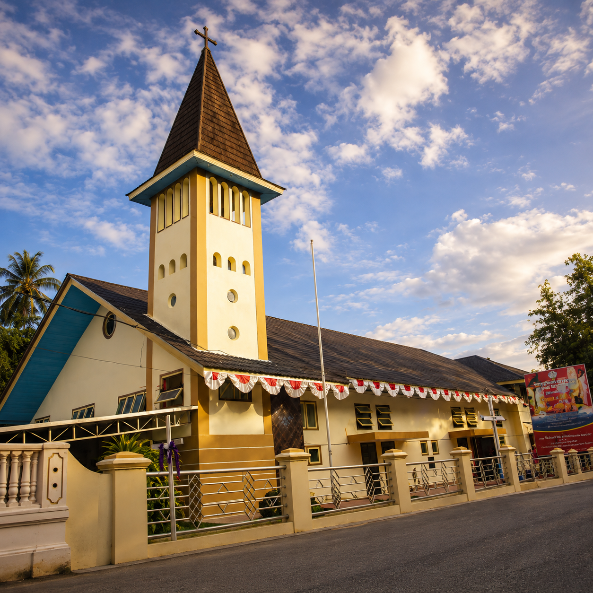

Lebih dari sekadar
bangunan.
GPM Syaloom Waimahu adalah keluarga iman. Tempat di mana setiap individu, dari berbagai generasi, dipanggil untuk bertumbuh bersama dan menemukan tujuan hidup di dalam Tuhan.
Kisah KamiMenghadirkan damai sejahtera dan terang Kristus di tengah dunia melalui persekutuan dan pelayanan kasih.

Mendalami kebenaran Alkitab melalui khotbah dan PA yang mencerahkan pikiran dan jiwa.
Membangun persaudaraan sejati yang saling menguatkan dalam suka maupun duka.
Mengulurkan tangan bagi sesama sebagai wujud nyata dari kasih Kristus di dunia.
GPM Syaloom Waimahu adalah keluarga iman. Tempat di mana setiap individu, dari berbagai generasi, dipanggil untuk bertumbuh bersama dan menemukan tujuan hidup di dalam Tuhan.
Kisah Kami